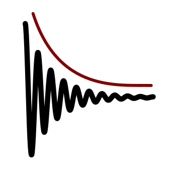
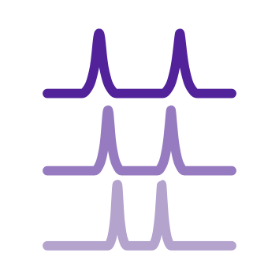
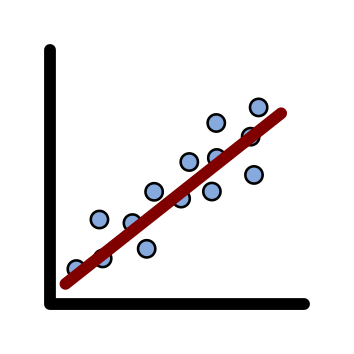
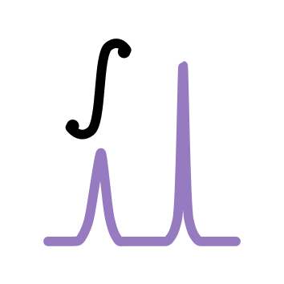
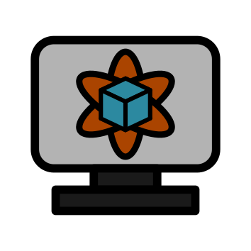
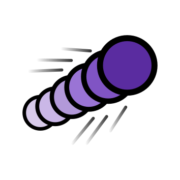
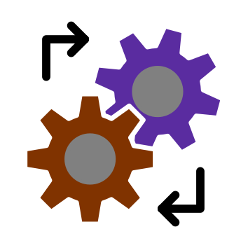
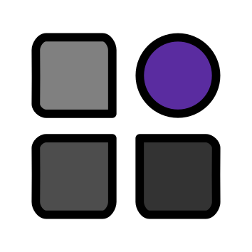
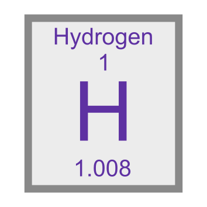
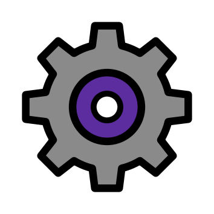

One Place for Everything NMR
openNMR is a free, open-source and vendor-agnostic app for working with your NMR data. No scripting needed. Just gorgeous figures and reliable analysis at the touch of a button.


Every tool in the toolbar has a guide
The buttons along the top of openNMR are the steps of a typical workflow. Pick one to see how it works.

Open
Browse a folder of experiments and load one or several spectra.

Process
Turn raw FIDs into spectra.

Compare
View several spectra side by side.

Fit
Fit your spectra reliably and accurately.

Integrate
Quantify your spectra.

Simulate
Synthesise spectra from your own parameters.

Dynamics
Fit pseudo-2d data and explore the impact of mobility on spectra.

Advanced processing
Specialised processing for more demanding data.

Apply
Delve into advanced methods: eNMR, Imaging and more.

Periodic table
Look up the properties of each nucleus.

Settings
Adjust openNMR to suit the way you work.
New to openNMR?
Start here, then work through the tools above in any order.